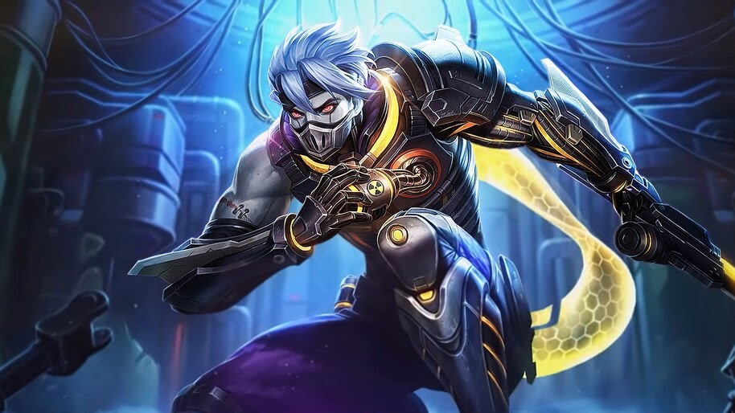

|  | |
|
Хаябуса
|
|
|
Хаябуса - герой класса убийца. Его особенностю является огромный урон с приобретением ультимативной способности.
|
|
"Стань свидетелемреальной силы тени"
-Хаябуса |
 |
Дата выхода: - 11 июля 2016 года |
|
| История героя: | |
| Две фракции, Алая и Тени, некогда были одним орденом, которую создал бог всех ниндзя, в те времена она носила название — Орден Алой Тени. Со временем, конфликт между двумя фракциями становился все сильнее. Так между ними разгорелась война. Главы орденов понимали, что если так продолжиться, то вскоре, они просто перебьют друг друга. На переговорах они решили, проводить состязание раз в 10 лет. На котором будут сражаться по одному, лучшему воину из фракций. Тот, кто станет сильнейшим, обретет титул Грандмастера Алой Тени, который станет покровителем двух фракций. Но 10 лет назад появилась тень, которая обладала настолько сильной способностью, что ее признали все. Такие уникумы появляются раз на 100 лет. Но тень пошла другим путем. Он убил главу Алой Фракции и вернулся чтобы утвердить свое право на управление двумя кланами. Главы не смогли стерпеть такое предательство, и отправили лучших бойцов, чтобы наказать Тень. В итоге они все были убиты. Это сильно ослабило кланы и они решили поступить по другому. Началась охота на тень, тот кто ее убьет и станет следующим главой кланов. В то время к обучению приступил молодой Хаябуса, которого начали тренировать для достижения цели. После тяжелых тренировок, он освоил технику теневого манипулирования и стал лучшим воином клана Тени. Хаябуса знал о своей цели, и когда бывшая тень снова появилась в Землях Рассвета, он отправился на ее поиски, чтобы выполнить свое задание. | |
Слабые и сильные стороны: Слабые:
Cильные:
Сборка героя:
Эмблемы
Выбор линии:
Так, как Хаябуса - убийца, в начале игры он отправляется в лес.
Описание навыков:
~Теневой убийца
Пассивное: Целитель из тени
Каждая раз атакуя навыком, Хаябуса делает 1 стак Тени противнику. Каждый стак тени увеличивает следующий урон навыком на 4%.

1 Навык: Призрачные сюрикены
Хаябуса бросает три сюрикена вперед в веерообразной области, которые через некоторое время вернутся к Хаябусе. Каждый сюрикен наносит 160 (+ 70% физическая атака) физического урона противнику, которого он заденет, снижает скорость передвижения на 60% и восстанавливает 10 единиц энергии Хаябуса. Урон и восстановление этого умения будут уменьшаться с каждым попаданием этого умения по противнику. Каждый из этих уровней навыка обеспечит Хаябусу дополнительными 3% заклинаниями-вампами.

2 Навык: Четыре Тени
Хаябуса делает рывок в указанном направлении, выпустив 4 тени в 4 направлениях. Если тень будет возле вражеского героя, вызовет замедление на 60%, нанесет 130 (+ 30% физической атаки) физического урона и поместит себя в тело врага. Хаябуса переместится в локацию тени, если этот навык будет использован снова, и если он направлен на тень, находящуюся внутри врага, нанесет врагу дополнительно 130 (+ 30% физической атаки) физического урона. Каждый раз, когда Хаябуса перемещает локацию своей тенью, время восстановления Призрачного сюрикена будет уменьшаться.

Ультимативная способность: Теневой Убийца
Хаябуса превращается в тень на поле битвы, нанося последовательный урон всем врагам вокруг определенной области. Каждая атака наносит 160 (+ 80% физического урона) очков физического урона.

|